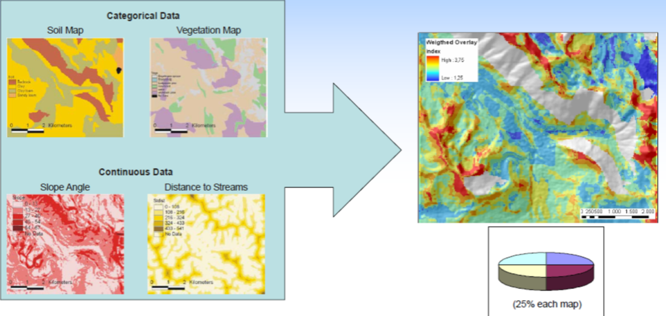
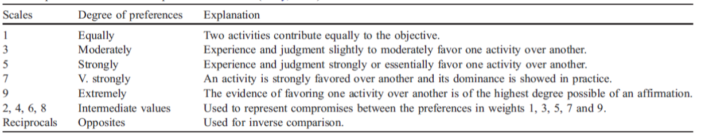
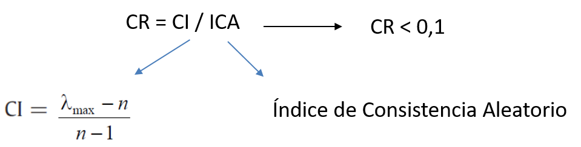
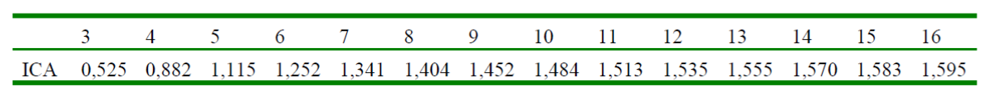

CARTOGRAFÍA GEOTÉCNICA
Métodos Heurísticos
Prof. Edier Aristizábal

Contenido
- Métodos
- Métodos heurísticos
- Ejemplos
- Métodos de mapeo directo
- Zonificación geológico - geotécnica
- Algebra de mapas
- Análisis Jerarquico de Procesos (AHP)
Métodos

Método heurístico (knowledge-driven)
La susceptibilidad es determinada directamente o indirectamente por un experto en el fenómeno y en la región de estudio. El proceso esta basado en la experiencia individual y en el uso del razonamiento por lógica. Las reglas de decisión son por lo tanto difíciles de formular por que varían de lugar a lugar.
El experto puede decidir:
- Variables y clases a utilizar
- El peso de las clases
- El peso de las variables
Criterios utilizados:
- Evidencia de actividad reciente
- Ambiente geomorfológico de cada unidad identificada
- Tipo de material y sus condiciones
- Pendiente de las laderas
- Relación con las unidades adyacentes que pueden activar o afectar la unidad de análisis.
- etc., etc, ...
Ventajas:
- Papel dominante de la opinión del experto en el análisis.
- Podrían ser utilizados a todas las escalas (pero no muy usado a escalas de detalle)
- Pueden permitir una rápida zonificación considerando una gran cantidad de variables
- Cada polígono individual puede ser evaluado separadamente de acuerdo con sus conjunto de condiciones únicas
Desventajas:
- Altamente subjetiva, ya que depende de la habilidad y experiencia del experto
- No se puede generalizar
- No genera evaluación de la amenaza cuantitativa
En los métodos heurísticos la opinión de experto realizando la caracterización son utilizadas para clasificar la susceptibilidad. Estos métodos combinan el mapeo de los deslizamientos y las características geomorfológicas como el principal elemento de entrada para la evaluación de la susceptibilidad.
Existen varios tipos de análisis heurísticos:
- Análisis geomorfológico (métodos de mapeo directo)
- Análisis basado en índices (mapeo indirecto)
- Análisis de decisión multicriterio (mapeo indirecto)
Cartografía Geomorfológica
Ejemplos
Mapa geomorfológico de amenaza
Zonificación geológico - geotécnica
Los estudios geológicos y geomorfológicos se deben enmarcar dentro de un estudio de zonificación de la aptitud geológica del predio de interés, el cual se debe planear y elaborar en diferentes etapas que comprenden:
- Recopilación de información existente,
- Fotointerpretación y uso de sensores remotos disponibles,
- Análisis detallado de la base topográfica existente,
- Realización de visitas de campo para el reconocimiento de las unidades litológicas y geomorfológicas,
- Descripción detallada y sistemática de afloramientos,
- Medición y análisis de estructuras geológicas,
- Levantamiento cuidadoso del perfil de meteorización y los depósitos de vertiente o aluviales,
- Identificación de los procesos morfodinámicos presentes en la zona de influencia del proyecto.
Fuente: Directrices y lineamientos AMVA (2012)
- Subzonas tipo A – Estable independiente: su estabilidad es de alto grado pues sus condiciones naturales son favorables. Posiblemente llegaría a depender del manejo mismo que se le dé al terreno.
- Subzonas tipo B – Estable dependiente: su estabilidad depende de factores externos, los cuales se deben corregir. También de factores internos que implican un manejo determinado del terreno y cierto tipo de obras civiles que garanticen el no deterioro de esta estabilidad natural inicial.
- Subzonas tipo C – Inestable recuperable: la estabilidad de estos terrenos es critica o presenta inestabilidad manifiesta; sin embargo, con algunos correctivos específicos se puede mejorar la estabilidad, y en consecuencia, adelantar ciertas obras civiles en si interior.
Fuente: Chica (1998)
- Subzonas tipo D – Inestable no recuperable: terrenos con inestabilidad manifiesta cuya recuperación no es posible o demasiado costosa comparada con las inversiones y tipo de obras proyectadas.
- Subzonas tipo E – Estable no utilizable: terrenos estables pero restringidos por condiciones urbanísticas u otras como estar ubicadas en vegas potenciales de inundación o cerca de frentes libres de taludes desprotegidos.
- Subzonas tipo F – Inestables no utilizables: terrenos inestables y restringidos por condiciones como las mencionadas para la zubzona anterior.
Fuente: Chica (1998)
- Zonas aptas: alto grado de estabilidad, sin procesos morfodinámicos activos e inactivos, estabilidad condicionada al tipo de intervención y su manejo..
- Zonas aptas con restricciones moderadas: zonas estables con estabilidad condicionada por la incidencia directa de los procesos morfodinámicos activos identificados en la UMI. Su estabilidad depende del manejo a los procesos existentes y la intervención, con obras de estabilización proyectadas técnica y económicamente viables.
- Zonas aptas con restricciones altas: se evidencia la ocurrencia de proceso morfodinámicos activos, y su estabilidad depende del manejo que se le de a estos procesos y la intervención. El estudio debe evaluar la viabilidad técnica y económica de las obras de estabilización proyectadas.
- Zonas no aptas: con evidente inestabilidad por la ocurrencia de procesos morfodinámicos. El estudio considera que las obras de estabilización proyectas son complejas y de alto costo con respecto a las intervenciones proyectadas en la zona o predio de interés.
Fuente: Directrices y lineamientos AMVA (2012)
Index mapping
Combina mapas de factores asociados con la ocurrencia de deslizamientos. Los pesos son determinados para cada factor basado en un estimativo de la influencia relativa a los deslizamientos. Las variables son generalmente divididas en clases, los cuales son ponderados utilizando el criterio de expertos. Finalmente, un índice de susceptibilidad o amenaza es obtenido para cada unidad del mapa.
Análisis Jerárquico de Procesos
Toma de decisiones multicriterio
Conjunto de aproximaciones, métodos, modelos, técnicas y herramientas dirigidas a mejorar a calidad integral de los procesos de decisión seguidos por los individuos y los sistemas, para mejorar la efectividad, eficacia y eficiencia de los proceso de decisión y a incrementar el conocimiento de los mismos.
Paradigma de la Racionalidad
Aaproximación orientada al proceso, cuyo propósito es la comprensión y el consenso. Y pretende la incorporación a los modelos de aspectos subjetivos, intangibles y no considerados, que condicionan la toma de decisiones de los individuos y organizaciones.
Es una técnica multi-objetivo y multi-criteria para toma de decisiones que permite al usuario llegar a una escala de preferencias a partir de un determinado numero de alternativas. Consiste en organizar una serie de factores en orden de jerarquía, asignando valores numéricos a valoraciones subjetivas sobre la relativa importancia de cada factor.
- Los pesos son obtenidos generalmente a través de los valores y vectores propios de la matriz. El vector propio que corresponde al mayor valor propio genera la prioridad relativa de los factores.
- También puede ser obtenido normalizando cada columna de la matriz de comparación, y calculando el promedio de las filas para resolver la matriz.
Escala para incorporar los juicios o valoraciones del decisor. La escala es estrictamente positiva y elimina las ambigüedades que tiene el ser humano en comparar elementos en la proximidad del cero o del infinito.
Los individuos son mas preciso al comparar elementos de la misma magnitud, número mágico de Miller (1956) 7(+/-2).
Radio de consistencia (CR)
Es utilizado para estimar la probabilidad que la matriz de juicio fue creada aleatoriamente.
 